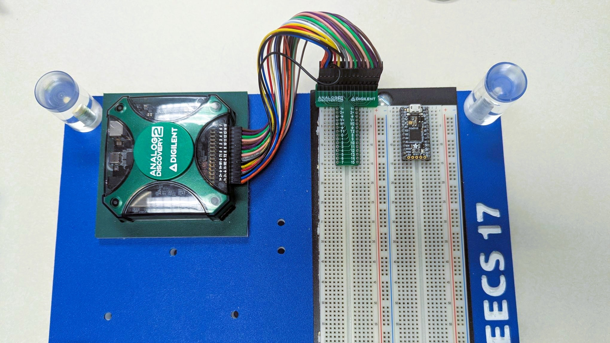
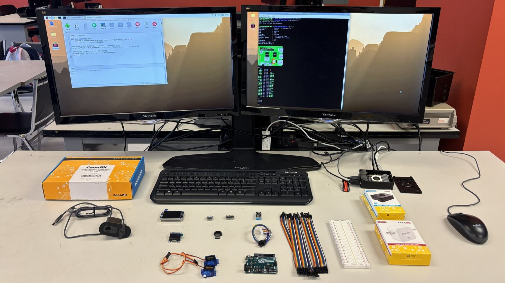
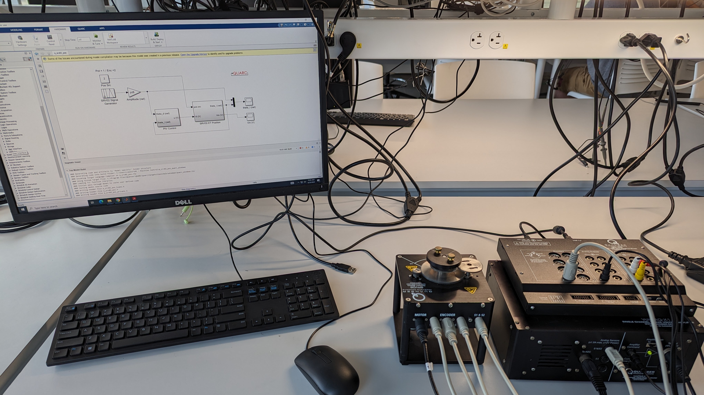

ELE 231 - EE Fundamentals, Syracuse University
Known as "Circuits I" or "DC Circuits".
Use textbook from Umich Free ECE Textbook Initiative: Circuit Analysis and Design
3rd Edition
By Fawwaz Ulaby, Michel M. Maharbiz, and Cynthia M. Furse

ELE 251 - Fundamentals of Linear Systems, Syracuse University
A modified version of "Circuits II" or "AC Circuits".
Key computation tool: Jupyter Notebook.
{kind=link}

ELE 292 - Linear Systems Laboratory, Syracuse University
Electrical-instrumentation, measurement and data-logging.
Key lab tool: RLC Circuits, Analog Discovery, Arduino.
{kind=link}

CSE 398 - Embedded and Mobile Systems Laboratory, Syracuse University
Known as "Computer Engineering Junior Design".
System-level hardware–software integration.
Key lab tool: Raspberry Pi.

400 - Intelligent Robotics, Syracuse University
On-going development.
{kind=link}

ECE 308 - Systems Simulation And Control Laboratory, Purdue University
Principles of operation and design of linear control systems.
Key lab tool: Quanser Rotary Servo & add-on attachments.
Quanser servo motor demo: https://youtu.be/99EZMMy8FD8